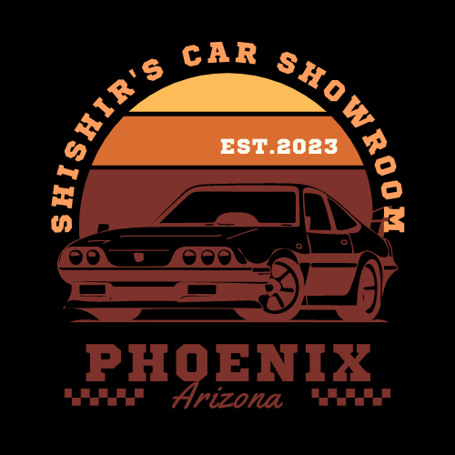
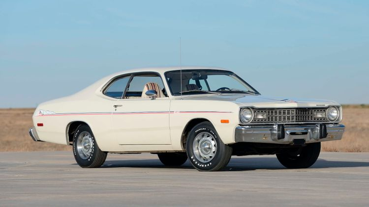

|  | Shishir's Car Showroom |
|---|
|  |
Dodge Dart Model Year: 1974 Miles Driven: 50k Previous Owners: Elmo and John Wick Price: $17,892 |
|---|
Dodge Dart is a line of automobiles marketed by Dodge from the 1959 to 1976 model years in North America, with production extended to later years in various other markets. The Dart name originally appeared on a 1956 Chrysler show car featuring a streamlined body designed by the Italian coachbuilder Carrozzeria Ghia that was later modified and renamed the Dart Diablo. The production Dart was introduced as a lower-priced, full-size Dodge in 1960 and 1961, became a mid-size car for 1962, and then was a compact from 1963 to 1976.